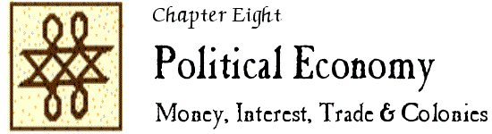

John Locke Chronology |
John Locke Manuscripts |
John Locke Resources |
John Locke Bibliography | ||

|
1621-1700 1701-1800 1801-1900 |
1901-1950 1951-1960 1961-1970 |
1971-1980 1981-1990 1991-2000 |
2001-2005 2006-2010 2011- |
 1991
1991
“General introduction : Locke on money.” // IN: Locke on money / John Locke ; edited … by Patrick Hyde Kelly … (1991) [Locke #506]. – p.1-109.
Also includes “Tables : changes in the money stock, 1693-8” (p. 110-121), “Textual introduction” (p. 122-158), and “Checklist of printings” (p. 159-162)
ジョン・ロック経済思想研究 / 生越利昭著. – 神戶 : 神戶商科大学経済研究所, 1991. – (神戶商科大学研究叢書 ; 39)
Jon Rokku keizai shisō kenkyū / Ogose Toshiaki cho. – Kōbe-shi : Kōbe Shōka Daigaku Keizai Kenkyūjo, 1991. – vi, 391 p. – (Kōbe Shōka Daigaku kenkyū sōsho ; 39)
ISBN 4-771-00554-0.
Unverified.
LNL 28:10
1992
“All the world was America” : John Locke and the American Indian. – See entry in Chapter 7.
“A mentor for monetarists” / William Letwin. // IN: Times literary supplement. – 28 Feb. 1992:8.
Review of Locke on money (1991)
1993
Le Fundamental Constitutions of Carolina attribuite a John Locke / Federico Boschi-Orlandini. – Genoa : Bozzi, 1993.
Unverified.
“Liberal conduct.” – See entry in Chapter 7.
European encounters with the new world : from renaissance to romanticism / Anthony Pagden. – New Haven ; London : Yale University Press, 1993.
See Ch. 4, “The savage decomposed” (p. 117-140)
“Die Einführung der Unsicherheit in die Moderne : Telosschwund und ökonomische Allokation : von Pascal zu Adam Smith” / von Birger P. Priddat. // IN: Archiv für Kulturgeschichte. – 75 (1993):419-444.
See “Uneasiness/Arbeit : J. Locke” (p. 428-434)
Schefold, B. et al.
Some considerations of the consequences of the lowering of interest and raising the value of money. – See entry in Chapter 0.
Vol. 2. Kommentarband herausgegeben von Wolfram Engels, Karl D. Grüske, Herbert Hax, Bertram Schefold mit Beiträgen von Hans Christoph Binswanger, Walter Eltis, Bertram Schefold und Karen I. Vaughn.
1994
“Trade, plantations, and property : John Locke and the economic defense of colonialism” / Barbara Arneil. // IN: Journal of the history of ideas. – 55 (1994):591-609.
LNL 25:4
New
A history of money : from AD 800 / John Chown. – London ; New York : Routledge, 1994.
See 6, “The Recoinage of 1696 : Locke, Lowndes and Newton” (pages 60-66)
The English gentleman in trade : the life and works of Sir Dudley North, 1641-1691 / Richard Grassby. – Oxford : Clarendon Press, 1994.
See Ch. 10, “The political economist” (p. 230-257)
Also includes the text of North, A discourse upon trade [1691] (p. 290-303)
1995
Rationalism and anti-rationalism in the origins of economics. – See entry in Chapter 3.
“Fondements des politiques de la pauvreté : notes sur ‘The report on the poor’ de John Locke” / Ai-Thu Dang. // IN: Revue économique. – 45 (1995):1423-1441.
LNL 27:5
“John Locke, the quantity theory of money and the establishment of a sound currency” / Walter Eltis. // IN: The quantity theory of money : from Locke to Keynes and Friedman / Mark Blaug … [et al.]. – Altershot ; Brookfield, Vt. : Edward Elgar, ©1995. – p. 4-26.
Revised version of “John Locke, Philosoph und Ökonom,” the introduction to a facsimile reprint of Some considerations … – Dusseldorf : Verlagsgruppe Handelsblatt, 1993. – (Klassiker der Nationalökonomie)
LNL 27:6
“Dutch data in Locke’s economic writings” / Patrick H. Kelly. // IN: Locke newsletter. – 26 (1995):119-140.
LNL 27:7
South Carolina begins : the records of a proprietary colony, 1663-1721 / Charles H. Lesser. – Columbia, S.C. : South Carolina Department of Archives and History, ©1995.
See ch. 1, “An English nobleman’s ‘darling’ : the Carolina proprietors, their records, and the founding of South Carolina” (p. 1-123)
Lords of all the world : ideologies of empire in Spain, Britain and France, c. 1500-c. 1800 / Anthony Padgen. – New Haven ; London : Yale University Press, ©1995.
See p. 77-83.
“Liberalism and colonialism.” – See entry in Chapter 7.
The ideology of prosperity : pursuits and coercion in a world of plenty / Ronald Puppo Bunds. – Thesis (Ph.D.)—Universitat Autónoma de Barcelona, 1995. – 236 p.
ISBN 84-490-0360-1.
Unverified; source/Abstract: DAI 58:1308C [“In Spanish”]
Economic thought before Adam Smith / Murray N. Rothbard. – Aldershot, Hants., England ; Brookfield, Vt. : Edward Elgar, ©1995. – (An Austrian perspective on the history of economic thought ; vol. 1)
See Ch. 11, “Mercantilism and freedom in England from the Civil War to 1750” (p. 307-342)
1996
John Locke and America. – See entry in Chapter 7.
Pensare il mondo che cambia : uno studio su economia e politica in John Locke / P. Farina. – Milano : Guerini, 1996. – 325 p.
ISBN 88-8107-069-3
Unverified.
LNL 27:6
A kind of life imposed on man : vocation and social order from Tyndale to Locke / Paul Marshall. – Toronto ; Buffalo ; London : University of Toronto Press, ©1996.
See Ch. 7, “Economics and calling : John Locke’s duality” (p. 85-96)
LNL 28:8
Models of value : eighteenth-century political economy and the novel / James Thompson. – Durham [N.C.] ; London : Duke University Press, 1996.
See Ch. 2, “Money as sign” (p. 40-85; also p. 148-150)
1997
“Juste prix et science de l’enrichissement chez John Locke” / Ai-Thu Dang. // IN: Économies et sociétés. – 31 (1997):49-69.
LNL 28:6
“Monnaie, liberalisme et cohesion sociale : autour de John Locke” / Ai-Thu Dang. // IN: Revue économique. – 48 (1997):761-771.
Abstract: “Money, liberalism and social cohesion : John Locke’s ideas” (p. 761)
LNL 28:6
The prophet of money : Locke’s political economy / Stewart Wilson Gardner. – Thesis (Ph.D.)—Michigan State University, 1997. – 366 p.
Unverified; source/Abstract: DAI 58:1892A.
“Calculating ‘Political arithmetick’ ” / Thomas Henvey. // IN: The Founders’ Library, University of Wales, Lampeter : bibliographical and contextual studies : essays in memory of Robin Rider / edited by William Marx. – Lampeter : Founders’ Library, St. David’s College, University of Wales, 1997. – (Trivium ; vol. 29-30). – p. 189-194.
1998
The Southeast in early maps / William P. Cumming. – 3rd ed. / rev. and enl. by Louis De Vorsey, Jr. – Chapel Hill : University of North Carolina Press, ©1998. – (The Fred W. Morrison series in Southern studies).
See Plate 35 and p. 17-18, 159-160: Locke’s map of the Cape Fear region.
John Locke and the Fundamental Constitutions of Carolina / Terrell L. Hallmark. – Thesis (Ph.D.)– Claremont Graduate University, 1998.
Unverified.
“The struggle for legitimacy and the image of empire …” – See entry in Chapter 7.
Theologie, Ökonomie, Macht : eine Rekonstruktion der Ökonomie John Lockes / Birger P. Priddat. – Marburg : Metropolis-Verlag, 1998. – 140 p. – (Ökonomische essays ; Band 8)
ISBN 3-895-18182-X.
Unverified.
A history of economic thought : the LSE lectures / Lionel Robbins ; edited by Steven G. Medema and Warren J. Samuels. – Princeton, N.J. : Princeton University PRess, ©1998.
See Lecture 7, “Child and Locke (interest)” (p. 66-74, concluded on p. 77) and Lecture 11, “Locke and Hume on property ; Hume on money” (p. 104-113)
LNL 31:7
Swift and Locke : satire, monetary theory, and intrinsic value / by Stephen E. Soud. – Thesis (Ph.D.)—University of Florida, 1998. – xi, 252 leaves.
Unverified; source/Abstract: DAI 59:4155/6.
New
The legal cartography of colonization : English intrusions on the American mainland in the seventeenth century / Christopher L. Tomlins. – Chicago : American Bar Foundation, 1998. – 778 pages.
Also: “The legal cartography of colonization, the legal polyphony of settlement : English intrusions on the American mainland in the seventeenth century” / Christopher Tomlin. // IN: Law and social inquiry. – 26 (2001):315-372.
1999
“Was ist Wirtschaft? : Was ist die Wissenschaft von der Wirtschaft?” / Malte Faber. // IN: Dialektik. – 3 (1999):13-41.
Abstract: PhI 2000.
“Legacy of Locke : ‘one good town’ ” / by Harold B. Gill, Jr. // IN: Colonial Williamsburg. – 21:no. 2 (April/May 1999):38-39.
The idea of the market and the role of government in the political economy of Locke, Smith, Mill, Marshall, Keynes and Hayek / by Christopher Guest. – Thesis (Ph.D.)– University of Sydney, 1999. – vi, 219 leaves.
Unverified.
“ ‘Land enough in the world’.” צ See entry in Chapter 7.
“Lockean money, indigenism and globalism.” – See entry in Chapter 7.
2000
The ideological origins of the British empire / David Armitage. – Cambridge : Cambridge University Press, 2000. – (Ideas in context ; 59)
See esp. p. 96-99, 165-166.
“The political economy of Britain and Ireland after the Glorious Revolution” / David Armitage. // IN: Political thought in seventeenth-century Ireland : kingdom or colony? / edited by Jane H. Ohlmeyer. – Cambridge : Cambridge University Press, 2000. – p. 221-243.
Exciting the industry of mankind : George Berkeley’s philosophy of money. – See entry in Chapter 3.
Cheves, L. (ed.)
The Shaftesbury papers and other records relating to Carolina and the first settlement on Ashley River prior to the year 1676.
Reprinted in 2000. – See entry under 1897.
“The significance of John Locke’s medical studies for his economic thought” / William O. Coleman. // IN: History of political economy. – 32 (2000):711-731.
LS 1:4
Harmony and the balance : an intellectual history of seventeenth-century English economic thought / Andrea Finkelstein. – Ann Arbor : University of Michigan Press, ©2000.
See esp. “John Locke : nineteen shillings do not a pound make”
Unverified.
“Monnaie et richesse chez John Locke : une politique de l’économie” = “Money and wealth according to John Locke : an economic policy” / Isabelle Garo. // IN: Revue de synthèse. – 121 (2000):9-45.
LS 3:6
The political thought of the recoinage crisis of 1695-7 / Kwasi Kwarteng. – Thesis (Ph.D.) – University of Cambridge, 2000.
Unverified.
2001
“The significance of John Locke’s medical studies for the history of economic thought” / William O. Coleman. // IN: Physicians and political economy : six studies of the work of doctor-economists / edited by Peter Groenewegen. – London ; New York : Routledge, 2001. – (Routledge studies in the history of economics ; 49). – p. 26-47.
“Come il poor divenne un labourer : la costruzione di un’ identità sociale tra Locke e Smith” / P. Farina. // IN: Classe operaia : le identità : storia e prospettiva / a cura di Paolo Favilli, Mario Tronti. – Milan : FrancoAngeli, ©2001. – (Studi e ricerche storiche ; 273). – p. 143-167.
Unverified.
LS 3:6
“Zeit ist Geld : der Umgang mit der Zeit als philosophisches Grundproblem der Okonomie” / Rudolf Kotter. // IN: Von der Antike bis zur Gegenwart : Erlanger Streifzüge durch die Geschichte der Philosophie / herausgegeben von Jens Kulenkampff und Thomas Spitzley. – Stuttgart : Palm & Enke, 2001. – p. 97-109.
Unverified.
“The legal cartography of colonization, the legal polyphony of settlement : English intrusions on the American mainland in the seventeenth century.” – See entry for first publication in 1998.
2002
“The Calvinist origins of Lockean political economy” / Richard Boyd. // IN: History of political thought. – 23 (2002):30-60.
Abstracts: PhI 2002; IPSA 52:4494.
LS 2:4
“Liberal conservativism, once and again : Locke’s ‘Essay on the poor law’ and contemporary US welfare reform” / Nancy J. Hirschmann. // IN: Constellations. – 9 (2002):335-355.
Abstract: IPSA 53:4526.
LS 3:7
“Giving orders.” – See entry in Chapter 7.
“Montagu, Charles (1661-1715), of Jermyn Street, Westminister, and Bushey Park, Hampton Court, Mdx.” / M.J.K. // IN: The History of Parliament. The House of Commons, 1690-1715 / Eveline Cruickshanks, Stuart Handley and D. W. Hayton. – Cambridge : published for the History of Parliament Trust by Cambridge University Press, 2002. – vol. 4:850-880.
See the section on the Recoinage of 1696 (p. 859-863]
The big problem of small change / Thomas J. Sargent, François R. Velde. – Princeton ; Oxford : Princeton University Press, ©2002. – (The Princeton economic history of the Western world)
See “The Great Recoinage of 1696” (pages 271-290)
“John Locke, Thomas Hobbes and the development of political economy” / Thea Vinnicombe and Richard Staveley. // IN: International journal of social economics. – 29 (2002):690-705.
LS 3:12
2003
“Medical metaphors and monetary strategies in the political economy of Locke and Berkeley” / C. George Caffentzis. // IN: History of political economy. – 35:annual supplement (2003):204-233.
2004
“John Locke, Carolina, and the Two treatises of government.” – See entry in Chapter 7.
“Locke’s Americana” / David Armitage. – Paper presented at “Civility, philosophy and public debate : a conference marking the 300th anniversary of the death of John Locke (1632-1704),” Centre for Public Culture and Ideas, Griffith University, Brisbane, Australia, July 14, 2004.
Abstract: http://www.griffith.edu.au/centre/cpci/pdf/john_locke_abstracts.pdf
“ ‘That excellent forme of government’ : new light on Locke and Carolina” / David Armitage. // IN: Times literary supplement. – 22 Oct. 2004:14-15.
LS 5:4
“Locke on property and value.” – See entry in Chapter 7.
“ ‘The ruine of their Diana’ : Lowndes, Locke, and the bankers” / Richard A. Kleer. // IN: History of political economy. – 36 (2004):533-556.
LS 5:10
Conceiving Carolina : proprietors, planters, and plots, 1662-1729 / L.H. Roper. – New York ; Houndmills, Basingstoke, Hampshire, England : Palgrave Macmillan, 2004.
See p. 32-35, 41-43, 69-70.
“The death penalty as monetary policy : the practice and punishment of monetary crime, 1690-1830” / Carl Wennerlind. // IN: History of political economy. — 36 (2004):131-161.
2005
“La teoria lockeiana della proprietà e l’America : alla radice della giustificazione dell’idea coloniale.” – See entry in Chapter 7.
Jealousy of trade : international competition and the nation-state in historical perspective / Istvan Hont. – Cambridge, Mass. ; London, England : The Belknap Press of Harvard University Press, 2005.
See esp. “Political economy and natural jurisprudence” (p. 419-443)
2006
“Money, money, money : the seventeenth-century effort to get an intellectual grasp on this slippery medium of trade” / Joyce Appleby. // IN: Common-place : the interactive journal of early American life. – 6 (2006).
Available online at: http://www.common-place.org/vol-06/no-03/appleby/ [viewed 9 April 2009]
Una malattia europea : il nuovo discorso coloniale francese e i suoi critici / Dino Costantini. – Pisa : PLUS-Pisa University Press, 2006. – (Methexis ; 8)
See Excursus 2, “Locke e l’America : alle origini del discorso coloniale” (p. 145-170)
ISBN 88-84892-423-5.
Unverified.
Imperialism and the corruption of democracies. – See entry in Chapter 7.
2007
The development of monetary economics : a modern perspective on monetary controversies / D. P. O’Brien. – Cheltenham, UK ; Northampton, MA : E. Elgar, ©2007.
See “The rate of interest : Locke and his critics” (p. 59-78)
Unverified.
LS 7:13
“John Locke, desire, and the epistemology of money” / John O’Brien. // IN: British journal for the history of philosophy. – 15 (2007):685-708.
Abstract: PhI 2008.
LS 8:13
“ ‘His nuts for a piece of metal’ : fetishism in the monetary writings of John Locke” / Carol Pech. // IN: Feminist interpretations of John Locke / edited by Nancy J. Hirschmann and Kirstie M. McClure (2007). – p. 269-295.
LS 7:14
2008
“¿Era inevitable 1808? : una revisión de la tradición de la decadencia española” / Eva Botella Ordinas. // IN: Revista de Occidente. – 326-327 (Jul.-Aug. 2008): 47-68.
Unverified.
LS 10:5
Richard T. Ely’s critique of capitalism. – See entry in Chapter 7.
“Unsettling colonies : Locke, ‘Atlantis’ and new world knowledges” / Vicki Hsueh. // IN: History of political thought. – 29 (2008):295-319.
Abstract: PhI 2008.
LS 8:9
Natural science and the origins of the British Empire / by Sarah Irving. – London ; Brookfield, Vt. : Pickering & Chatto, 2008). – (Empires in perspective ; no. 5)
See Ch. 5, “John Locke’s language of empire” (p. 109-132)
LS 8:10
New
Benjamin Worsley (1618-1677) : trade, interest and the spirit in Revolutionary England / Thomas Leng. – Woodbridge, Suffolk, UK ; Rochester, NY : The Boydell Press, 2008.
An unholy trinity : the influence of Locke, Smith, and Keynes on British macroeconomic stabilization policy / James Morrison. – Thesis (Ph.D.)– Stanford University, 2008. – vi, 406 p.
Unverified.
2009
“Locke, ‘some Americans’, and the discourse on ‘Carolina’ ” / James Farr. // IN: Locke studies. – 9 (2009):19-96.
Includes the text of “Carolina” from John Ogilby’s America (1671) [Locke #14A], which the author argues was written by Locke.
Available online (viewed December 26, 2013): http://www.lockestudies.org/wp-content/uploads/2013/10/FarrLS9.pdf
LS 10:6
“Labor and commerce in Locke and early eighteenth-century English georgic” / by Robert P. Irvine. // IN: ELH. – 76 (2009):963-988.
LS 10:7
“ ‘Monkey’ business : Locke’s ‘College’ correspondence and the adoption of the plan for the Great Recoinage” / Patrick Kelly. // IN: Locke studies. – 9 (2009):139-165.
LS 10:8
Newton and the counterfeiter : the unknown detective career of the world’s greatest scientist. – See entry in Chapter 12.
“Slaves, servants and wage earners : free and unfree labour, from Grotius to Blackstone” / Maria Luisa Pesante. // IN: History of European ideas. – 35 (2009):289-320.
LS 9:12
[The conceptual rise of the consumer in the economic thought of eighteenth-century England : from Locke to Smith] / K. Suzuki. // IN: ã½ã·ãªãµã¤ã¨ã³ã¹ = Waseda review of socio-science. – 15 (2009):277-286.
Unverified; title in Japanese.
LS 9:15
2010
“Fundamental Constitutions of Carolina, 1669” / David Armitage. // IN: Encyclopedia of U.S. political history. Volume 1, Colonial beginnings through Revolution, 1500-1783 / edited by Andrew W. Robertson. – Washington, DC : CQ Press, 2010. – p. 142-144.
「帝国の理論家ジョン・ロック？」 = “Teikoku no rironka Jon Rokku?” – See English version published in 2012.
New
“Debating empires, inventing empires : British territorial claims against the Spaniards in America, 1670-1714” / Eva Botella Ordinas. // IN: Journal of early modern cultural studies. – 10 (2010):142-168.
“Coinage” / Richard Boyd. // IN: The Continuum companion to Locke / general editors, S.-J. Savonius-Wroth, Paul Schuurman, Jonathan Walmsley (2010). – pages 129-131.
“Rate of interest” / Richard Boyd. // IN: The Continuum companion to Locke / general editors, S.-J. Savonius-Wroth, Paul Schuurman, Jonathan Walmsley (2010). – pages 204-206.
“Locke, Berkeley and Hume as philosophers of money : an apology and synopsis” / George C. Caffentzis. // IN: George Berkeley : religion and science in the age of Enlightenment / [edited by] Silvia Parigi. – Dordrecht ; Heidelberg ; London ; New York : Springer, 2010. – (Archives internationales d’histoire des idées = International archives of the history of ideas ; 201). – p. 57-71.
LS 11:4
“Counteracting counterfeiting? : Bodin, Mariana, and Locke on false money as a multidimensional issue” / Ludovic Desmedt and Jérôme Blanc. // IN: History of political economy. – 42 (2010):323-360.
LS 10:5
Hybrid constitutions : challenging legacies of law, privilege, and culture in colonial America. – See entry in Chapter 7.
“Papers on money” / Koen Stapelbroek. // IN: The Continuum companion to Locke / general editors, S.-J. Savonius-Wroth, Paul Schuurman, Jonathan Walmsley (2010). – pages 273-275.
“Value and wealth” / Koen Stapelbroek. // IN: The Continuum companion to Locke / general editors, S.-J. Savonius-Wroth, Paul Schuurman, Jonathan Walmsley (2010). – pages 230-232.
“The great ocean of knowledge” : the influence of travel literature on the work of John Locke. – See entry in Chapter 11.
2011
“John Locke, money, and credit” / Daniel Carey. // IN: The empire of credit : the financial revolution in the British Atlantic world, 1688-1815 / edited by Daniel Carey and Christopher J. Finlay. – Dublin ; Portland, OR : Irish Academic Press, 2011. – p. 25-51.
“El desplazamiento en la teoría de la propiedad de John Locke : del criterio de necesidad a la teoría del valor para jistificar la colonización inglesa en América” = “Displacement in Locke’s theory of property : from the criterion of necessity to the theory of value to justify the English colonization of America.” – See entry in Chapter 7.
“John Locke’s monetary argument : an analysis with methodological and historical implications” / Mark Garrett Longaker. // IN: Rhetoric Society quarterly. – 41 (2011):125-144.
LS 11:8
Translating empire : emulation and the origins of political economy / Sophus A. Reinert. — Cambridge, Mass. ; London, England : Harvard University Press, ©2011.
See 2, “Cary’s Essay on the state of England” (p. 73-128)
LS 11:9
“John Locke, Christian mission, and colonial America” / Jack Turner. // IN: Modern intellectual history. – 8 (2011):267-297.
LS 12:9
Casualties of credit : the English financial revolution, 1620-1720 / Carl Wennerlind. — Cambridge, Mass. ; London, England : Harvard University Press, 2011.
See esp. Ch. 4, “Capital punishment in defense of credit” (p. 123-157)
LS 11:12
2012
“John Locke, theorist of empire?” / David Armitage. // IN: Empire and modern political thought / edited by Sankar Muthu. – Cambridge : Cambridge University Press, 2012. – p. 84-111.
Japanese translation: 「帝国の理論家ジョン・ロック？」 / ディヴィッド・アーミテイジ. = “Teikoku no rironka Jon Rokku?” / Deibiddo Āmiteiji. // IN: 青山学院大学文学部紀要. = Aoyama Gakuin Daigaku Bungakubu kiyō = Journal of the College of Literature, Aoyama Gakuin University. – 51 (March 2010):1-28.
LS 10:4
Revised version published in Foundations of modern international thought (2013), chapter 7.
“Liberal colonialism, domestic colonies and citizenship” / Barbara Arneil. // IN: History of political thought. – 33 (2012):491-523.
“Locke, species, and money.” – See entry in Chapter 3.
“Lowndes and Locke on the value of money” / Kepa Ormazabal. // IN: History of political economy. – 44 (2012):157-180.
LS 12:7
“A ‘foundation in nature’ : new economic criticism and the problem of money in 1690s England” / Courtney Weiss Smith. // IN: The eighteenth century. – 53 (2012):209-228.
LS 14:14
“John Locke, accumulation by dispossession and the governance of colonial India.” — See entry in Chapter 7.
2013
Foundations of modern international thought. – See entry in Chapter 7.
“The changing moral justification of empire : from the right to colonies to the obligation to civilize’ / Camilla Boisen. // IN: History of European ideas. – 39 (2013):335-353.
Unverified.
LS 14:4
New
“Locke y las legitimaciones Británicas de dominio : del argumento de la agricultura al de la mejora de la naturaleza” = “Locke and British legitimization of dominion : from the agricultural argument to the improvement of nature” / Eva Botella Ordinas. // IN: Espacio, tiempo y forma. Serie IV, Historia moderna. – 26 (2013):19-43.
In Spanish, English abstract.
“Subjects by allegiance to the King? : debating status and power for subjects, and slaves, through the religious debates of the early British Atlantic.” – See entry in Chapter 7.
“Locke’s species : money and philosophy in the 1690s” / Daniel Carey. // IN: Annals of science. – 70 (2013):357-380.
LS 13:5
“The Carolina context of John Locke’s theory of slavery.” – See entry in Chapter 7.
The crimes of the economy : a criminological analysis of economic thought. – See entry in Chapter 7.
2014
“Shaftesbury’s theory of art : substance and virtue.” – See entry in Chapter 3.
“Actores sociales y económicos en las propuestas juridicas y normativas de John Locke” / Joan Severo Chumbita. – Anales del Seminario de Historia de la Filosofía. – 31 (2014):89-105.
Unverified.
LS 14:6
Making money : coin, currency, and the coming of capitalism / Christine Desan. – Oxford : Oxford University Press, 2014.
See 9, “Re-theorizing money” (pages 330-359)
LS 17:11
“Euvoluntariness and just market exchange : moral dilemmas from Locke’s Venditio” / Ricardo Andrés Guzmán, Michael C. Munger. // IN: Public choice. – 158 (2014):39-49; erratum, 164 (2015):189.
LS 14:7
Money : the unauthorized biography / Felix Martin. – New York : Alfred A. Knopf, 2014.
See esp. 8, “The economic consequences of Mr. Locke” (pages 122-136)
LS 14:10
L’Amérique de John Locke : l’expansion coloniale de la philosophie européenne / Matthieu Renault. – Paris : Amsterdam Editions, 2014. – 205 pages.
Unverified.
LS 17:27
2016
Liberty and equality in political economy : from Locke versus Rousseau to the present / Nicholas Capandi, Gordon Lloyd. – Cheltenham, UK : Edward Elgar Publishing, [2016]. – (New thinking in political economy)
See 1, “John Locke and the three pillars of liberty”
Unverified.
LS 17:9
“John Locke, clipped coins, and the unstable currency of public reason” / Douglas Casson. // IN: Perspectives on Locke … (2016). // IN: Etica & politica = Ethics & politics. – 18/2 (2016):153-180.
LS 17:10
“Challenging the historical paradigm : Tories, Whigs, and economic writing, 1680-1714” / Nicholas Hudson. // IN: Eighteenth-century life. – 40:no. 3 (September 2016):68-88.
LS 17:16
Empiricist devotions : science, religion, and poetry in early eighteenth-century England – See entry in Chapter 7.
The Ashley Cooper plan : the founding of Carolina and the origins of Southern political culture / Thomas D. Wilson. – Chapel Hill : The University of North Carolina Press, ©2016. – xiv, 305 pages.
LS 17:37
2017
New
“Slavery, sovereignty, and ‘inheritable blood’ : reconsidering John Locke and the origins of American slavery” / Holly Brewer. // IN: American historical review. – 122 (2017):1038-1078.
|
1621-1700 1701-1800 1801-1900 |
1901-1950 1951-1960 1961-1970 |
1971-1980 1981-1990 1991-2000 |
2001-2005 2006-2010 2011- |